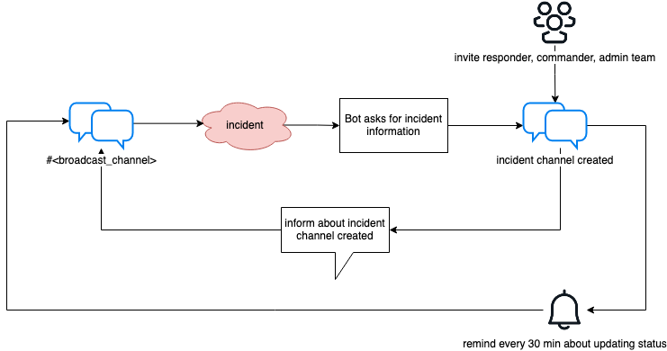
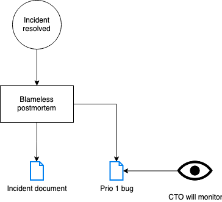

Getting started
Invite bot to broadcast channel
For security reasons, the Slack API prohibits bots to invite themselves to channels. The bot therefore needs to be manually invited to the chosen broadcast channel before it can communicate there. Invite the bot to the broadcast channel by using this command in the channel:
/invite devopsbot
Build
These instructions assume you are on a Mac.
Make sure you have the latest version of Go installed: brew update && brew upgrade
Install golangci-lint to be able to run make lint: brew install golangci/tap/golangci-lint
To build the binary locally:
$ make build
To build the Docker image locally:
$ make image.iid
Deployment
The bot can be deployed any preferred way.
Kubernetes
A certificate need to be issued to expose the application over HTTPS, for example via ZeroSSL or Let's Encrypt.
The application need to be made publicly available.
The Kubernetes resources could look like this for example:
---
# Source: helmchart/templates/configmap.yaml
apiVersion: v1
kind: ConfigMap
metadata:
name: devopsbot-settings
data:
addr: :3333
incident.environments: |-
[
"Staging",
"Production"
]
incident.regions: |-
[
"eu-west-1",
"us-east-1"
]
server.prometheusNamespace: devopsbot
tls.addr: :3443
tls.cert: /var/devopsbot/tls.crt
tls.key: /var/devopsbot/tls.key
trace: "false"
verbose: "false"
---
# Source: helmchart/templates/service.yaml
apiVersion: v1
kind: Service
metadata:
name: devopsbot
labels:
app: devopsbot
spec:
ports:
- port: 3333
targetPort: 3333
protocol: TCP
name: "http"
selector:
app: devopsbot
---
# Source: helmchart/templates/deployment.yaml
apiVersion: apps/v1
kind: Deployment
metadata:
name: devopsbot
labels:
app: devopsbot
spec:
strategy:
type: RollingUpdate
rollingUpdate:
maxSurge: 1
maxUnavailable: 0
replicas: 1
selector:
matchLabels:
app: devopsbot
template:
metadata:
labels:
app: devopsbot
annotations:
prometheus.io/scrape: "true"
prometheus.io/path: "/metrics"
prometheus.io/port: "3333"
spec:
affinity:
podAntiAffinity:
preferredDuringSchedulingIgnoredDuringExecution:
- weight: 25
podAffinityTerm:
labelSelector:
matchExpressions:
- key: app
operator: In
values:
- devopsbot
topologyKey: "kubernetes.io/hostname"
containers:
- name: devopsbot
image: <path_to_image>
imagePullPolicy: Always
ports:
- name: http
containerPort: 3333
resources:
limits:
cpu: 900m
memory: 256Mi
requests:
cpu: 600m
memory: 20Mi
readinessProbe:
httpGet:
path: /ready
port: 3333
initialDelaySeconds: 1
timeoutSeconds: 1
periodSeconds: 2
failureThreshold: 300
livenessProbe:
httpGet:
path: /live
port: 3333
initialDelaySeconds: 300
timeoutSeconds: 2
periodSeconds: 3
failureThreshold: 2
env:
- name: slack.accessToken
valueFrom:
secretKeyRef:
key: slack.accessToken
name: app-secrets
- name: slack.adminGroupID
valueFrom:
secretKeyRef:
key: slack.adminGroupID
name: app-secrets
- name: slack.broadcastChannelID
valueFrom:
secretKeyRef:
key: slack.broadcastChannelID
name: app-secrets
- name: slack.signingSecret
valueFrom:
secretKeyRef:
key: slack.signingSecret
name: app-secrets
- name: incidentDocTemplateURL
valueFrom:
secretKeyRef:
key: incidentDocTemplateURL
name: app-secrets
- name: server.prometheusNamespace
valueFrom:
configMapKeyRef:
key: server.prometheusNamespace
name: devopsbot-settings
- name: incident.environments
valueFrom:
configMapKeyRef:
key: incident.environments
name: devopsbot-settings
- name: incident.regions
valueFrom:
configMapKeyRef:
key: incident.regions
name: devopsbot-settings
- name: addr
valueFrom:
configMapKeyRef:
key: addr
name: devopsbot-settings
- name: tls.addr
valueFrom:
configMapKeyRef:
key: tls.addr
name: devopsbot-settings
- name: tls.cert
valueFrom:
configMapKeyRef:
key: tls.cert
name: devopsbot-settings
- name: tls.key
valueFrom:
configMapKeyRef:
key: tls.key
name: devopsbot-settings
- name: verbose
valueFrom:
configMapKeyRef:
key: verbose
name: devopsbot-settings
- name: trace
valueFrom:
configMapKeyRef:
key: trace
name: devopsbot-settings
volumeMounts:
- name: tls-cert
mountPath: /var/devopsbot
readOnly: true
volumes:
- name: tls-cert
secret:
secretName: <secret_with_tls_cert>
---
Local development
To run the bot locally a valid certificates is needed by using for example mkcert, and devopsbot need to resolve to 127.0.0.1:
$ mkcert devopsbot
$ sudo echo "127.0.0.1 devopsbot" >> /etc/hosts
Then, run a local copy after having provided values for parameters that are empty by default:
$ bin/devopsbot \
--slack.accessToken=xoxb-.... \
--slack.signingSecret=...
And access it at https://devopsbot:3443 or http://devopsbot:3333.
See the --help output for more flags.
To test devopsbot functionality, it must be accessible by Slack. Optionally
use inlets to expose the locally running
devopsbot to the Internet. The inlets server can run on a free tier EC2
instance. Make sure it is accessible from the whole Internet and port range is
wide enough. Note its publicly accessible IPv4 IP. Run the inlets server from
the EC2 instance. Run the inlets client from laptop where devopsbot is running.
Verify routes
One way of verifying routes is via manual POST requests:
- Start the bot
- Generate a Slack signature for the request body being investigated, in
this case
command=/devopsbot, for example viago:package main import ( "crypto/hmac" "crypto/sha256" "encoding/hex" "fmt" ) func main() { h := hmac.New(sha256.New, []byte("<signing secret, empty if not specified>")) _, _ = h.Write([]byte("v0:<UNIX time stamp>:command=%2Fdevopsbot")) computed := h.Sum(nil) fmt.Println(hex.EncodeToString(computed)) } - Post the request:
curl -X POST -H 'Content-type: application/x-www-form-urlencoded' -H 'X-Slack-Request-Timestamp: <UNIX time stamp>' -H 'X-Slack-Signature: v0=<signature from previous step>' --data 'command=%2Fdevopsbot' localhost:3333/bot/command
Troubleshooting
The bot assumes basic infrastructure to be working. A mitigation plan should be made if any of these systems fail:
- The app runs via Slack which can become unavailable, check Slack System Status
- The bot need to be deployed successfully to be available in Slack, check the deployment
- The app Docker image is hosted on GitHub container registry which can become unavailable, check GitHub Status
- No internet is available, check with your internet provider
- No electricity is available, check with your electricity provider
- Input devices work as expected, check keyboard and mouse
Incident declaration automation
Devopsbot automates incident declaration:
- Incident responders and commanders should focus on the essential tasks of resolving the incident
- Automate the repetitive steps in the incident management process
- Keep affected stakeholders informed about the status of the incident
- Standardize and document the procedure to lay the foundation for something to be improved upon
An incident cannot be planned for, the nature of it is that it just happens. Incidents happen all the time for everyone, it is an unfortunate but natural part of life. That does not mean they can be taken for granted. Teams should have a process for managing them and learn from them.
An incident is defined as something that:
- Negatively affects customers
- Was not planned for
- Cannot be resolved within 1 hour
During incidents
The workflow during an incident is as follows:

After incidents
When an incident has been declared as resolved, there is a need to communicate the resolution and learn from the experience.
The workflow after an incident is suggested as follows:

Slack app setup
This page contains the Slack app manifest which can be used to configure the application.
Make sure to set the correct scopes.
Make sure to specify the address bot/command for the slash command.
_metadata:
major_version: 1
minor_version: 1
display_information:
name: devopsbot
description: DevOpsBot
background_color: "#004492"
features:
bot_user:
display_name: devopsbot
always_online: false
slash_commands:
- command: /devopsbot
url: https://<domain>/bot/command
description: DevOpsBot
usage_hint: "[help, incident, resolve]"
should_escape: false
oauth_config:
scopes:
user:
- channels:read
- channels:write
- groups:read
- groups:write
- im:read
- im:write
- mpim:read
- mpim:write
- reminders:write
- users:read
bot:
- channels:manage
- channels:read
- chat:write
- chat:write.customize
- commands
- groups:read
- groups:write
- im:read
- im:write
- mpim:read
- mpim:write
- users:read
settings:
interactivity:
is_enabled: true
request_url: https://<domain>/bot/interactive
org_deploy_enabled: false
socket_mode_enabled: false
token_rotation_enabled: false
Localizing the bot
The locale of the bot is set depending on the user's language preference in Slack.
go-i18n manages the translations.
The web page for go-i18n describes the procedures for translating a new language and new messages, but they are describe here too. First get the tool: go get -u github.com/nicksnyder/go-i18n/v2/goi18n. The binary will be installed into $GOPATH.
Translate a new language
If there is a new language to be added:
- Create an empty message file for the new language, for example Finnish:
touch translate.fi.json - Run
goi18n merge active.en.json translate.fi.jsonto populatetranslate.fi.jsonwith the messages to be translated - Translate
translate.fi.jsonand rename it toactive.fi.json - Load
active.fi.jsoninto the bundle
Translate new messages
If there are new strings to be translated:
- Run
goi18n extract -format jsonto updateactive.en.jsonwith new messages - Run
goi18n merge active.*.jsonto generate updatedtranslate.*.jsonfiles - Translate all the messages in the
translate.*.jsonfiles - Run
goi18n merge active.*.json translate.*.jsonto merge the translated messages into the active message files